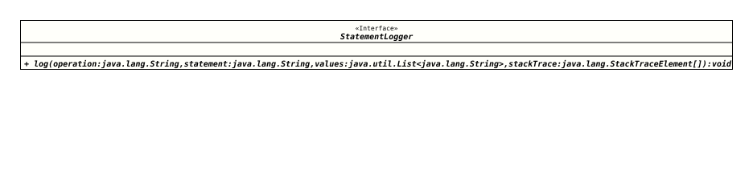

Interface EnhancedPreparedStatement.StatementLogger
- Enclosing interface:
EnhancedPreparedStatement
- Functional Interface:
- This is a functional interface and can therefore be used as the assignment target for a lambda expression or method reference.
@ClassVersion(sourceVersion="$Id: EnhancedPreparedStatement.java 1151 2025-10-01 21:32:15Z tquadrat $")
@API(status=STABLE,
since="0.1.0")
@FunctionalInterface
public static interface EnhancedPreparedStatement.StatementLogger
The definition of logger method for a
PreparedStatement.
This is a functional interface whose functional method is
log(String,String,List,StackTraceElement[]).
- Author:
- Thomas Thrien (thomas.thrien@tquadrat.org)
- Version:
- $Id: EnhancedPreparedStatement.java 1151 2025-10-01 21:32:15Z tquadrat $
- Since:
- 0.1.0
- See Also:
- UML Diagram
-

UML Diagram for "org.tquadrat.foundation.sql.EnhancedPreparedStatement.StatementLogger"
{kind=link}
-
Method Summary
-
Method Details
-
log
Provides the logging information.- Parameters:
operation- The name of the operation that logs.statement- The source of the prepared statement.values- The values.stackTrace- The stacktrace; can benull.
-